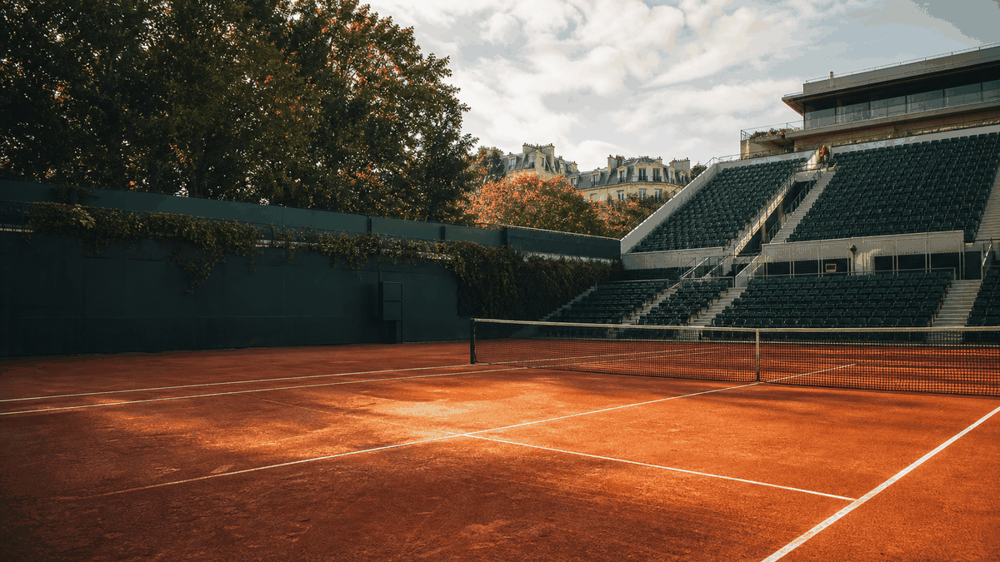

What to know
- The clay-court Grand Slam returns to Paris, bringing singles, doubles and wheelchair events to Stade Roland-Garros.
- The event is useful to follow for programme details, visitor planning and result updates.
- Country, city and topic context are available through OneSliders internal navigation.
- Results, line-ups or programme details can be added when available.
Event structure
| Part | Focus | Visitor use |
|---|---|---|
| Before | Planning | Understand the format and timing. |
| During | Programme | Follow the main event moments. |
| After | Result or recap | Add winners, outcomes or next steps. |
Visitor intent
A compact view of what this event page is most useful for.